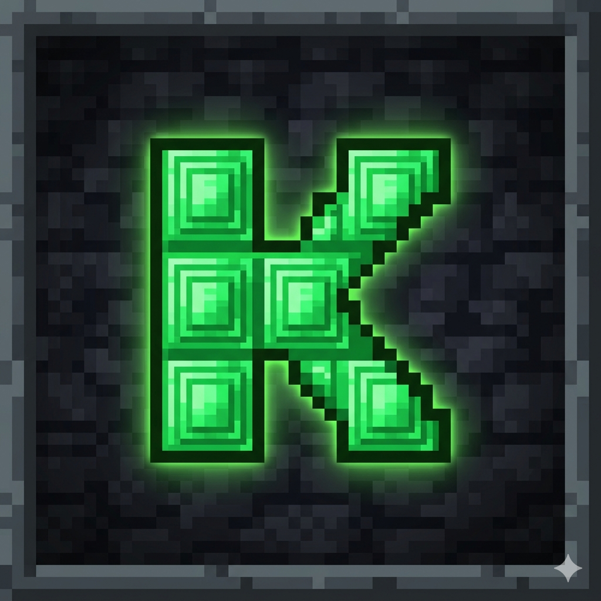

Гайд по фарму изумрудов от kurierwerr
Самая богатая жила. Даю всем своим АВТО-РЕФБЕК 70%. Будешь зарабатывать больше других!
Начать копатьЗдесь можно не только кликать, но и продавать свои услуги: написать коммент, сделать дизайн. Настоящий рынок!
Поторговаться с жителямиСтарый и надежный букс. Очень много квестов. Почти как Соцпаблик, но со своими фишками. Идеально как вторая шахта.
Зачаровать предметДва похожих букса, где можно быстро сварить зелья (заработать на кликах). Много мелких, но легких заданий.
Сварить зелье (WMRFast) Сварить зелье (SEO-Fast)Для тех, кому лень махать киркой. Просто ставишь расширение, и оно само фармит для тебя копейку.
Построить фермуЧтобы не терять изумруды, я скрафтил своего бота. Он считает все комиссии на буксах.
Забирай в ТГ: @Zarabotok_Bux_Bot